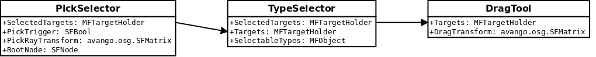

The module "avango-tools" provides different classes for interaction in virtual environments. Generally there are two different concepts to operate on so called target holders: selectors and tools. A selector is a source of a list of target holders. A tool is a manipulator of the target objects in a list of target holders.
All classes of avango-tools operate on target holders. A target holder contains a reference to the target object which is generated by a selector or manipulated by a tool. It also contains additional information to describe the target object in the context of the creation of the target holder.
A selector generates a list of target holders depending on the type of selector. Most of the selectors of the avango-tools module do some filtering of an already existing list of target holders. At this time, there is only one selector that acts as a source of new target holders: the PickSelector. So, the most common case is to create a chain of selectors with a PickSelector at its start. The final output of the last selector in the chain can then be used as the input for a tool.
# create a selector that generates a list of picked objects pick_selector = avango.tools.nodes.PickSelector() pick_selector.PickTrigger.connect_from(window.MouseButtons_OnlyLeft) pick_selector.PickRayTransform.connect_from(camera.MouseNearTransform) pick_selector.RootNode.connect_from(viewer.Scene) # create a selector that fiters out all targets of type osg.nodes.Sphere type_selector = avango.tools.nodes.TypeSelector() type_selector.Targets.connect_from(pick_selector.SelectedTargets) type_selector.SelectableTypes.value.append(avango.osg.nodes.Sphere())
A tool needs a list of target holders as a parameter. For every target holder in this list, the referenced object is manipulated depending on the type of tool.
drag_tool = avango.tools.nodes.DragTool() drag_tool.Targets.connect_from(type_selector.SelectedTargets) drag_tool.DragTransform.connect_from(camera.MouseTransform)
The following image shows an example. It shows the connections made in the code snippets above.
